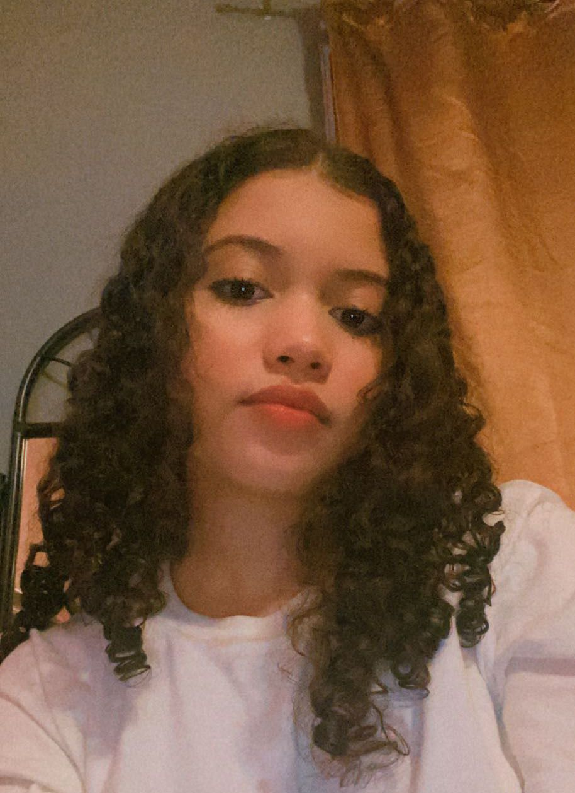
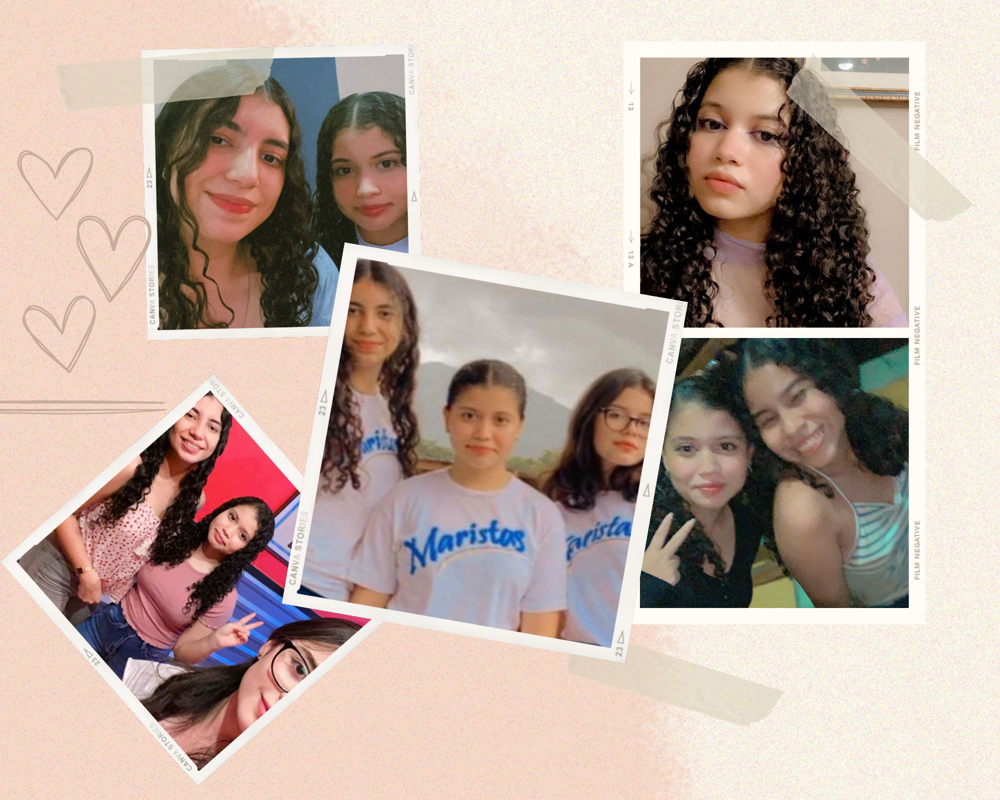

| |
|
| Yo | |
|  | Me llamo Jillyan Nicolle Padilla, nací el 29 de septiembre del 2005 en la ciudad de Comayagua, soy la hermana mayor, estuve en el kínder María Estela de Ruíz, estudié en la Escuela Marcelino Pineda López y actualmente estoy estudiando en el Instituto Marista La Inmaculada. Me gusta viajar, ver series, pasear a mis perros, escuchar música y mirar películas. |
| |
 |